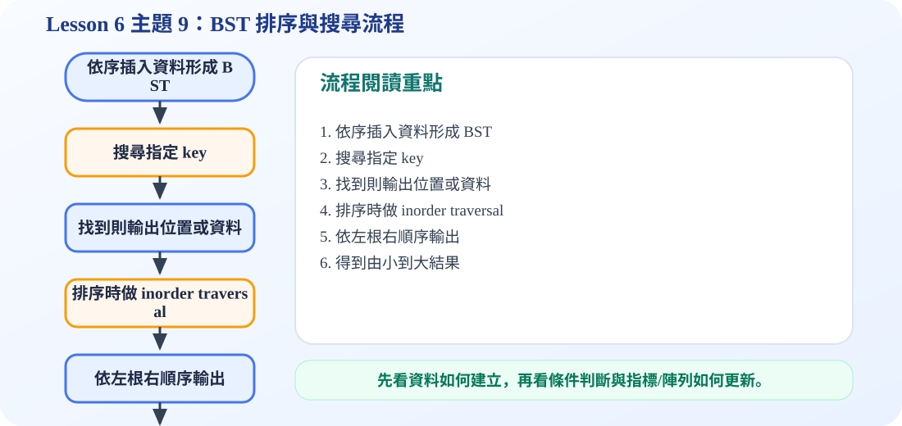

一、用 BST 排序的核心觀念
重點公式不是數學公式，而是走訪順序
BST 的左子樹都比節點小，右子樹都比節點大。因此只要用 inorder traversal，也就是「左子樹 → 節點 → 右子樹」，輸出的結果就會從小到大排列。
投影片 28 的輸出結果是：1 2 3 4 7 8 9 10 14 16。
二、動畫：Inorder 如何輸出排序結果
按下一步可以模擬 inorder traversal 一個一個輸出節點。
三、BST 搜尋流程
搜尋時從 root 開始。如果要找的值等於目前節點，就找到；如果比較小，就往 left child；如果比較大，就往 right child。若最後走到 NULL，代表資料不存在。
四、互動示範：搜尋 8、1、15
搜尋 15 時，會走 7 → 14 → 16。因為 15 小於 16，但 16 的左邊沒有節點，所以結果是 NOT FOUND。
五、字母 BST：搜尋、列印與插入
投影片 33–37 把數字換成字母。規則完全一樣：字母排序較小的放左邊，較大的放右邊。
搜尋 J
從 G 開始比較，J 比 G 大往右；再依照 BST 規則繼續比較，直到找到 J 或走到空的位置。
Alphabetical Order
對字母 BST 做 inorder traversal，就會得到 A, B, C, D, E, F, G, H, I, J。
插入新字母 M 時，也是先搜尋 M 應該存在的位置；當搜尋到空的位置，該位置就是 M 應該接上的地方。
六、C 程式碼：BST 排序與搜尋
bst_sort_search.c
包含 insert、search、inorder sort 與測試搜尋 8、1、15。
/*
中文註解版程式：bst_sort_search.c
說明：主題 9：BST Sorting and Searching。利用 inorder traversal 得到排序結果，並示範搜尋路徑。
閱讀方式：先看資料結構定義，再看操作函式，最後看 main() 如何測試。
*/
// 匯入標準輸入輸出函式庫，提供 printf / scanf 等功能。
#include <stdio.h>
// 匯入標準函式庫，提供 malloc / free / exit 等記憶體與程式控制功能。
#include <stdlib.h>
// 定義節點結構：資料欄位存節點內容，指標欄位負責連到其他節點。
typedef struct Node {
int key;
struct Node *left;
struct Node *right;
} Node;
// 建立新節點：配置記憶體、填入資料，並把左右指標初始化為 NULL。
Node* createNode(int key) {
Node* node = (Node*)malloc(sizeof(Node));
if (node == NULL) {
printf("Memory allocation failed.\n");
exit(1);
}
node->key = key;
node->left = NULL;
node->right = NULL;
return node;
}
// BST 插入：比目前節點小往左，大往右；空位置就是新節點位置。
Node* insert(Node* root, int key) {
if (root == NULL) return createNode(key); // 空位置就是插入點
if (key < root->key) root->left = insert(root->left, key);
else if (key > root->key) root->right = insert(root->right, key);
return root;
}
// BST 搜尋：從 root 開始比較，小往左、大往右，走到 NULL 表示找不到。
Node* search(Node* root, int key) {
Node* current = root;
while (current != NULL) {
printf("Compare with %d\n", current->key);
if (key == current->key) return current;
if (key < current->key) current = current->left;
else current = current->right;
}
return NULL;
}
// Inorder 走訪：Left → Visit → Right；套用在 BST 會得到由小到大的排序。
void inorder(Node* root) {
if (root == NULL) return; // 遞迴終止條件：空節點不需要處理
inorder(root->left); // 先走左子樹
printf("%d ", root->key); // 再拜訪目前節點
inorder(root->right); // 最後走右子樹
}
// 釋放整棵樹：先釋放左右子樹，再釋放目前節點，避免記憶體洩漏。
void freeTree(Node* root) {
if (root == NULL) return; // 遞迴終止條件：空節點不需要處理
freeTree(root->left);
freeTree(root->right);
free(root);
}
// 主程式：建立測試資料，呼叫上方函式，觀察輸出結果。
int main(void) {
int data[] = {7, 14, 10, 8, 16, 9, 3, 2, 4, 1};
int n = sizeof(data) / sizeof(data[0]);
Node* root = NULL;
for (int i = 0; i < n; i++) {
root = insert(root, data[i]);
}
printf("BST sort by inorder traversal:\n");
inorder(root);
printf("\n\n");
int targets[] = {8, 1, 15};
for (int i = 0; i < 3; i++) {
printf("Search %d:\n", targets[i]);
Node* result = search(root, targets[i]);
if (result != NULL) printf("Found %d.\n\n", targets[i]);
else printf("%d NOT FOUND.\n\n", targets[i]);
}
freeTree(root);
return 0;
}
可編輯 C 程式範例：含中文註解與線上編輯器
這一段提供可直接修改的 C 程式碼。可以按「複製程式」貼到線上編輯器執行，也可以下載 .c 檔案。
程式題目教學內容：BST Sorting and Searching
一、程式題目講解
本題示範如何用 BST 進行排序與搜尋，並印出搜尋過程中的比較路徑。學生需要理解每一次比較都會決定往左或往右。
二、完整程式碼
完整可執行程式碼已保留在上方「可編輯 C 程式範例：含中文註解與線上編輯器」區塊中，檔名為 bst_sort_search.c。該程式碼已加入中文註解，學生可以直接複製到 OnlineGDB、Programiz 或 OneCompiler 執行。
三、程式執行結果
BST sort by inorder traversal:
1 2 3 4 7 8 9 10 14 16
Search 8:
Compare with 7
Compare with 14
Compare with 10
Compare with 8
Found 8.
Search 1:
Compare with 7
Compare with 3
Compare with 2
Compare with 1
Found 1.
Search 15:
Compare with 7
Compare with 14
Compare with 16
15 NOT FOUND.中序走訪得到排序結果；搜尋 8 與 1 都找到，輸出比較路徑；搜尋 15 時走到 16 後無法再往下找到 15，所以輸出 NOT FOUND。
四、程式流程圖與流程圖說明
本頁下方已保留原本的程式流程圖。閱讀流程圖時，可以依序掌握「初始化資料或節點 → 執行主要函式或判斷 → 輸出結果」的過程。先插入資料建立 BST，再用 inorder 輸出排序。接著搜尋 8、1、15，每次從 root 開始比較，依照目標值大小往左或往右，直到找到目標或遇到 NULL。
五、重要函數與語法說明
searchWithPath()：邊搜尋邊印出比較節點；insert()：建立 BST；inorder()：用 BST 完成排序輸出；printf()：顯示搜尋路徑。
六、整體說明
本題重點是 BST 同時能支援排序與搜尋；搜尋路徑可幫助學生看懂演算法如何一步一步排除不可能的分支。
程式流程圖：BST 排序與搜尋流程
下圖是本主題對應的程式執行流程，適合搭配本頁 C 程式碼一起看。

流程講解
- BST 的 inorder traversal 會得到由小到大的排序結果。
- 搜尋時仍從 root 開始，每一步只保留可能包含 target 的那一邊。
- 因此 BST 同時可以示範 search 與 sort。
- 不過若樹太歪斜，效率會退化，需要注意資料插入順序。
這張流程圖把本頁程式的執行順序整理成一條清楚路徑。閱讀時先看輸入與資料如何建立，再看條件判斷、指標或陣列索引如何改變，最後用輸出結果確認程式邏輯是否正確。